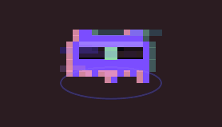
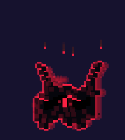

Two pixel pets that live on a Linux desktop and hear music. One listens and dances. The other takes his place and waits for the drop.

The witness. He studies every song and dances to it. The song is the main character; he is the one who feels it.

The thing left in his place. It wears his shape, moves like noise, and explodes on the drop.
92 seconds, one song, eight genres. Every frame of the pets comes from their real code, driven by the music: nothing is animated by hand. Sound on.
The song has eight parts, and each one wakes up something different in them. Pick one: it loops while you look.
Loops play without a gap. Audio starts only when you press play.
They share one small window. They never share it at the same time.
A 14×10 pixel creature in violet, with one green eye behind a visor. Anything about his face happens inside the visor.
A changeling in the folk sense: a thing left in place of the real one. Dark red, longer horns, one wrong letter in every title it shows.
Twenty scenes, each rendered from the real engine on a scripted song. Click any of them to see it big.
A desktop pet for Linux Mint (Python, GTK3, cairo), split into small parts that run in order. The pictures, the music and the film are all made from code.
The GIFs and the film run the pet's own drawing code on a fake clock, with a song fed to its ear instead of live audio. What you see is what the pet does on the desktop.
The music is synthesized in Python: no samples, no outside audio. One original melody travels through all eight genres. The forgery part is the cute part itself, sped up ×1.30.
The song writes a map of every kick, snare and hat. The film reads that map, so the changeling blows up on the exact kick of each drop.
Their world speaks Russian in capitals. Here is what the words mean.